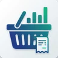

Watchly: What To Watch
Movie & TV discovery app with shared watchlists for friends, 13 Cloud Functions, 8 languages, and 240+ registered users on Google Play.
10 projects built since 2024. Select any card to explore its architecture, technology stack, and engineering details.
Movie & TV discovery app with shared watchlists for friends, 13 Cloud Functions, 8 languages, and 240+ registered users on Google Play.
Adaptive irrigation system that evaluates soil and weather sensors per plant type and waters only when needed. Selected for Robotistan's UNO Q program.

3D digital twin on MapLibre with ~56k trees, Blender building models, and a 5-year budget, energy, and carbon simulation. Selected for COP31.

127-item bilingual TR/EN QR menu with allergen details, business website, and a no-install PWA admin panel for instant mobile price updates.

Bilingual TR/EN corporate showcase and machine catalog for an industrial yarn winding manufacturer operating since 1970.

Multi-brand water distribution catalog powered by Firebase Realtime Database, one-tap WhatsApp order drafts, and a native Android admin panel.

Personal Android voice assistant with Google Bard NLP layer, Firebase Auth & Realtime Database sync, CameraX + ML Kit barcode scanner, and 50+ language translation.


JavaFX desktop application with role-based admin/accounting views, custom linked list inventory tracking, expiration alerts, and single Shade JAR packaging.
Autonomous Arduino robot that patrols while avoiding obstacles, detects flame direction across three sensors, and extinguishes it with an L9110 fan.

My first Android app built while learning Kotlin and SQLite: an offline 3-stage educational game for kids with custom artwork, audio, and token mechanics.